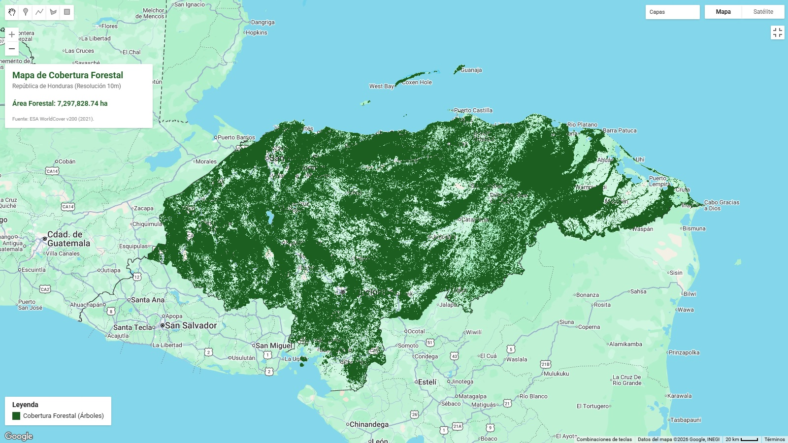
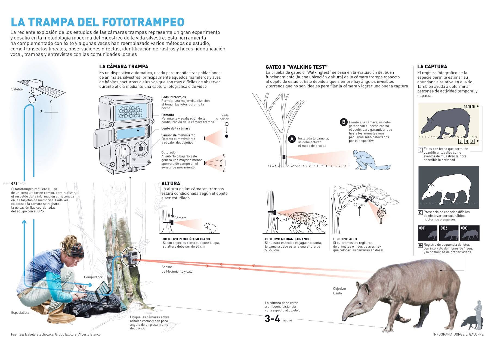
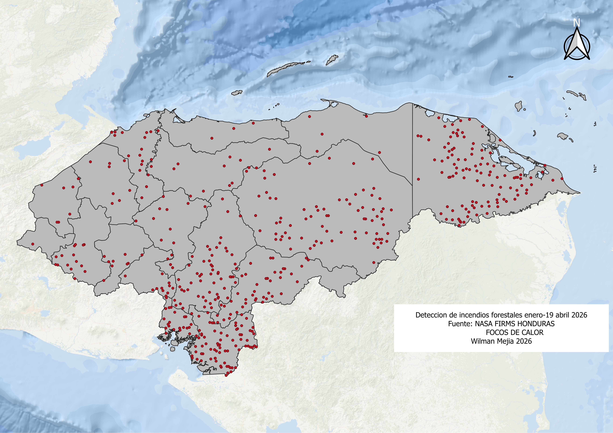
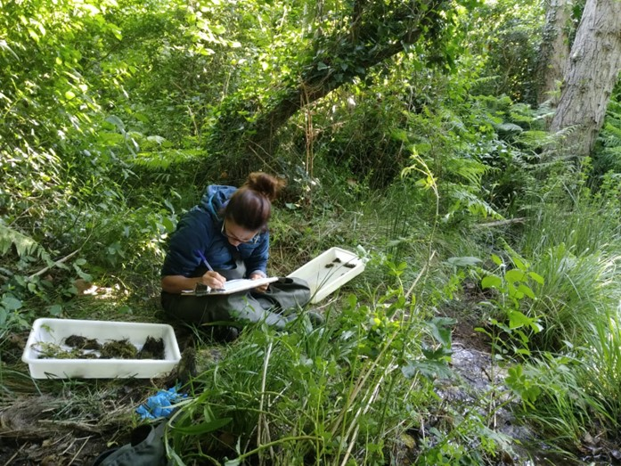

🌿 Distrito Central · Honduras · Centroamérica
Consultoría técnico-científica fundada por biólogos especialistas. Llevamos la ciencia del campo al análisis territorial, y los datos a decisiones que protegen el ambiente.
scroll
Consultoría técnico-científica fundada por biólogos especialistas. Llevamos la ciencia del campo al análisis territorial, y los datos a decisiones que protegen el ambiente.
Somos una firma técnico-científica que une especialidades complementarias en un solo equipo: la biología de campo y los sistemas de información geoespacial.
VIDIA Consultoría nace de la convicción de que los retos ambientales de Centroamérica requieren respuestas que integren trabajo de campo riguroso, análisis territorial avanzado y comprensión de la normativa ambiental vigente.
Compartimos una base sólida en metodologías de inventarios biológicos, monitoreo de biodiversidad e investigación científica aplicada, lo que nos permite abordar proyectos de manera integral desde la identificación de una especie en campo hasta la producción de cartografía temática para toma de decisiones.
Trabajamos con instituciones de gobierno, organismos de cooperación internacional, ONG, sector privado y academia, en Honduras y la región centroamericana.
Especialista en delitos ambientales, levantamientos de información en campo e identificación de especies. Experiencia en inventarios biológicos, monitoreos de fauna y flora, y peritajes ambientales.
Especialista en SIG, análisis geoespaciales, estadísticas de cobertura, creación de insumos cartográficos y análisis de datos. Dominio de teledetección y plataformas como Google Earth Engine.
Hacemos el ciclo completo identificamos, medimos, mapeamos y documentamos. Desde el campo hasta el informe final.
Diseño y ejecución de protocolos de muestreo, cámaras trampa, transectos, puntos de conteo y redes de niebla para caracterización de biodiversidad.
Producción de mapas temáticos, análisis de cobertura, modelos de distribución de especies y análisis de conectividad de hábitats.
EIA, planes de manejo, diagnósticos ambientales y auditorías técnicas con metodología rigurosa y respaldo legal.
Elaboración de informes periciales, dictámenes técnicos y documentación de evidencia para procesos legales relacionados con delitos contra el ambiente.
Acompañamiento técnico para cumplimiento de EUDR. Trazabilidad, análisis de riesgo de deforestación y documentación requerida.
Análisis multitemporal con imágenes satelitales, detección de deforestación, degradación forestal y mapeo de incendios mediante teledetección.
Formación especializada en protocolos de muestreo, uso de cámaras trampa, análisis en QGIS, ArcGIS y Google Earth Engine para equipos técnicos.
Un proceso riguroso que integra trabajo de campo, análisis de datos y entrega de resultados verificables y accionables.
Revisión de antecedentes, definición de objetivos y diseño de metodología adaptada al territorio.
Levantamiento de información, identificación de especies, instalación de equipos y muestreo sistemático.
Procesamiento en SIG, teledetección y plataformas de análisis de datos para interpretación territorial.
Informes técnicos, cartografía, bases de datos y recomendaciones fundamentadas en evidencia científica.
Un vistazo a algunos de los sitios donde hemos ejecutado trabajo de campo y análisis geoespacial
Muestras de cartografía temática, análisis geoespacial y trabajo de campo desarrollado.

Análisis multitemporal con Sentinel-2

RNP , Intibucá

Análisis EOO/AOO — UICN

Altura de dosel — datos ETH

dNBR + focos de calor FIRMS

Levantamiento de información en sitio
Trabajamos con organizaciones que necesitan ciencia rigurosa y análisis territorial para tomar decisiones con impacto ambiental real.
ICF, SERNA y municipalidades que requieren inventarios y auditorías técnicas.
Proyectos financiados por BID, FIDA, GEF, USAID con componentes de biodiversidad y cobertura forestal.
Organizaciones de conservación que requieren líneas base, monitoreos y análisis de efectividad de manejo.
Empresas bajo requerimientos EUDR que necesitan debida diligencia ambiental.
Bufetes, fiscalías y juzgados que requieren peritajes técnicos en casos de delitos ambientales.
Universidades y centros de investigación que necesitan apoyo en metodologías de campo y análisis geoespacial.
"Hacemos el ciclo completo —
identificamos, medimos,
mapeamos y documentamos."
Ciencia de campo. Inteligencia territorial. Honduras y Centroamérica.
¿Tiene un proyecto ambiental en mente? Cuéntenos y le preparamos una propuesta técnica.
Desde inventarios de biodiversidad hasta análisis geoespaciales y due diligence ambiental, estamos listos para acompañarle con metodología científica y tecnología de punta.